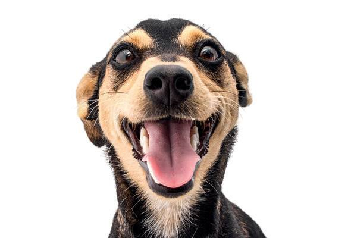

Tudo sobre os Vira Latas os mais legais

Vira-latas (oficialmente chamados de SRD - Sem Raça Definida) são cães ou gatos sem linhagem pura documentada. O termo surgiu no Brasil para descrever animais abandonados que reviravam latas de lixo nas ruas em busca de comida, mas hoje é usado com muito orgulho para definir qualquer pet mestiço
Os vira-latas são cães únicos, inteligentes e extremamente resistentes. Por serem uma mistura de raças, eles se adaptam muito fácil a qualquer ambiente e aprendem regras rapidamente. São companheiros perfeitos, conhecidos por sua lealdade infinita e um amor gigante pela família.
Os vira-latas são cães muito resistentes, mas também precisam de atenção. Banhos quinzenais com secagem completa evitam fungos e mantêm a pele saudável. A escovação semanal remove os pelos mortos, enquanto a limpeza regular dos olhos e das orelhas previne infecções, garantindo que eles fiquem sempre limpos e confortáveis.